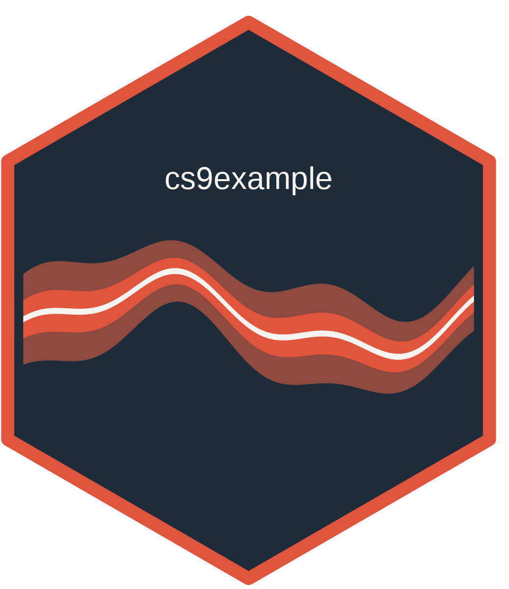

weather_export_plots (action)
Source:R/weather_export_plots.R
weather_export_plots_action.RdCreates argset$output_dir, draws data$data as a ribbon between temp_min
and temp_max over date, and saves it with ggplot2::ggsave() to
argset$output_absolute_path. That path is a glue::glue() template
evaluated once against argset, so "{argset$output_dir}" resolves but a
brace left inside argset$output_filename does not.
Details
This is the one action that touches no database table, so tables is unused
and the example below passes NULL for it.
See also
weather_export_plots_data_selector(), which produces this action's
data argument. cs9example has no vignettes of its own; how cs9 pairs an
action with a data selector is documented in cs9::SurveillanceSystem_v9.
Other cs9 task actions:
weather_clean_data_action(),
weather_download_and_import_rawdata_action()
Examples
# An argset shaped like the one cs9 builds for this task, and a stand-in for
# what the data selector would have returned.
d <- list(data = data.table::data.table(
date = as.Date("2024-01-01") + 0:29,
temp_min = seq(-8, 6, length.out = 30),
temp_max = seq(-2, 12, length.out = 30)
))
argset <- list(
location_code = "county_nor03",
output_dir = fs::path(tempdir(), "cs9example-plots"),
output_filename = "weather_county_nor03.png",
output_absolute_path = fs::path("{argset$output_dir}", "{argset$output_filename}"),
first_analysis = TRUE,
last_analysis = TRUE
)
weather_export_plots_action(data = d, argset = argset, tables = NULL)
#> Saving 6.67 x 6.67 in image
#> NULL
fs::dir_ls(argset$output_dir)
#> /tmp/RtmpqwuPYF/cs9example-plots/weather_county_nor03.png